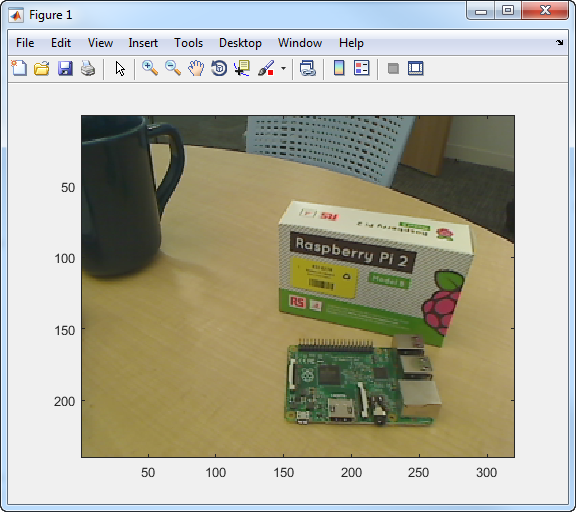

Create connection to Raspberry Pi web camera
wcam = webcam(mypi)wcam = webcam(mypi, cameraName)wcam = webcam(mypi, cameraIndex)wcam = webcam(mypi, cameraName, resolution)wcam = webcam(mypi, cameraName)cameraName. Use this
syntax when you have more than one camera connected to the Raspberry Pi
hardware.
wcam = webcam(mypi, cameraIndex)cameraIndex. Use
this syntax when you have more than one camera connected to the Raspberry Pi
hardware.
wcam = webcam(mypi, cameraName, resolution)
You can connect from the MATLAB software to the web camera and take a photograph.
Connect the Raspberry Pi to your host computer.
If you have not previously configured your Raspberry Pi, see Update Support Package.
Create a connection from the MATLAB software to the Raspberry Pi hardware.
mypi = raspberrypi
Create a connection, wcam,
from the MATLAB software to the web camera, and set the image
resolution. The connection displays the web camera properties.
wcam = webcam(mypi)
wcam =
webcam with properties:
Name: '/dev/video0'
Resolution: '320x240'
AvailableResolutions: {'320x240' '640x480'}Import and display a sequence of 10 snapshots on your host computer.
for ii = 1:10 img = snapshot(wcam) imagesc(img) drawnow end
